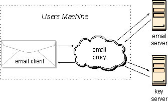
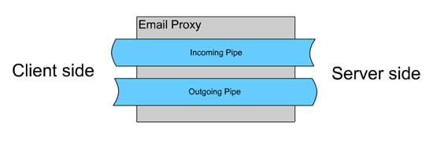
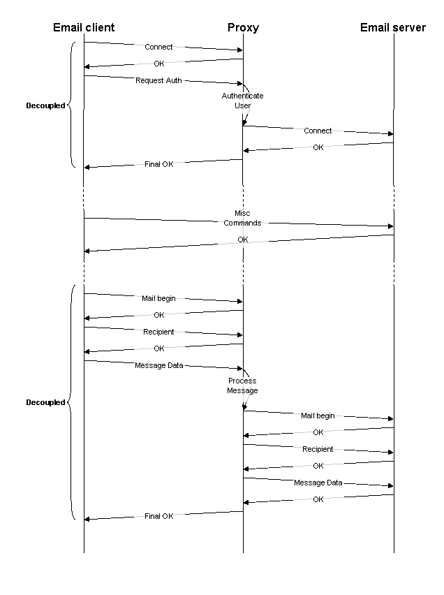

Oxford Brookes Secure Email Project |
This document is intended as a brief introduction to the architecture and construction of the Secure Email Proxy.
It is intended to complement the Javadoc generated documentation to allow new programmers on the project to orient themselves quickly.
The most up-to-date project documentation can be found on the project website (http://secemail.brookes.ac.uk).
The project's lead developer is currently Marcus Povey <mpovey@brookes.ac.uk>
Instead of using plugins for differing email clients the email proxy sits on the client machine between the email client and email server and performs the necessary encryption, decryption, signing, authorisation and key management depending on how it is configured.

The users email client is set to point to the email proxy, which will in turn point to a conventional POP3 and SMTP server (currently we are not proxying IMAP) and a public Key server for the users organisation.
When the user wishes to send an email they merely write the email as normal and press the send button. This email is sent to the proxy which examines the message and extracts the recipients email address. The proxy then automatically retrieves the recipients public key from the key server and uses that to encrypt the message. Optionally the user can set up the proxy to digitally sign all their email using their private key.
Receiving email works in a similar manner. The recipients private key is used to decrypt the email and the email checked for a digital signature. If there is a signature, the senders public key is retrieved from the public key server and used to validate the message.
The Email Proxy consists of the following main sections:
High Level
Low Level
The high level sections make up the application that controls the low level sections. It should be a fairly simple matter to implement other applications using the low level API (with hopefully only a minumum of code refinement); for example, a multi-user proxy or a plugin for a webmail system.

There are two email pipes in the proxy, one handling outgoing messages and another handling incoming messages.
Each pipe is constructed out of a number of objects that will act in turn on a message, for example objects to encrypt and sign a message (in the case of the outgoing pipe) or to decrypt and verify a message (in the case of the incoming pipe).
At either end of the pipe is an object that converts to an from the email protocol (SMTP, POP3 etc) and an internal protocol. This internal protocol provides an abstract way to watch for key events in the email exchange as well as a protocol independent way to catch errors.
Each pipe runs concurrently on its own thread. Once started the pipe listens on a given port for the email client to begin a transaction.
For most of the time, commands from the client are simply relayed to the server and the response relayed back. Certain events however require the proxy take special action.
Some actions require that the email client and email server be "decoupled" until some later point in the exchange, this means that in certain cases (for example when the email client begins sending an email) the email proxy pretends to be the email server and "fakes" an exchange before performing some processing and sending the final result to the email server.
Another place where the exchange is decoupled is during the initial SMTP-AUTH login.
Here is a diagram showing the interaction between email client, proxy and server during a typical outgoing mail exchange...

An algorithm handler represents the core functionality of the Secure Email Proxy and contains all the cryptographic routines. Currently there is only an algorithm handler available for OpenPGP.
The OpenPGP handler is passed a list of key sources and passphrases together with an email. This is processed and the result returned.
When email is sent through the proxy, it is intercepted and constructed into an Email object. This, in turn, is passed to the algorithm handler.
The handler examines the email and extracts the recipient addresses (and sender address if the signing option is set). These addresses are used in the key search.
The handler will search for the corresponding key in each registered key store in turn. If a matching key is found it is returned, otherwise an exception is thrown.
If the key is a secret key then the handler will try each registered pass phrase in turn. If no pass phrase could be found that decodes the secret key data an exception is thrown. The email pipe catches this exception and prompts the user to enter a new pass phrase.
Processing of incoming email is pretty much the exact reverse of the outgoing mail process, except keys are searched for by Key ID and not User ID. Also, a log is attached to the email.
Key handlers provide a common API for accessing and querying key stores. This allows the Secure Email Proxy to be extended to obtain keys from diverse key sources, including more exotic sources like HTTP key servers.
Currently, all key sources can either be a file or a server, and extend the classes KeyFile and KeyServer respectively.